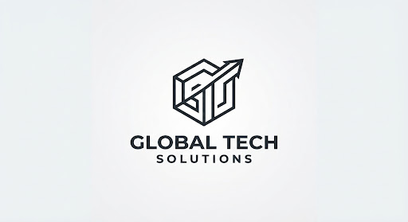

Construire le futur, brique par brique.
Architecte senior avec plus de 12 ans d'expérience, je transforme des visions complexes en réalités structurelles. Mon approche allie rigueur technique et innovation esthétique pour créer des espaces qui inspirent et perdurent.
Diplômé de l'École Nationale Supérieure d'Architecture, j'ai dirigé des projets d'envergure internationale, allant de complexes résidentiels durables à des gratte-ciels iconiques. Mon expertise réside dans la capacité à naviguer entre les contraintes environnementales et les aspirations humaines.
Vision & Valeurs
Innovation Radicale
Repousser les limites du possible en intégrant les dernières technologies de construction et de design paramétrique.
Durabilité
Concevoir pour les générations futures en minimisant l'empreinte carbone et en utilisant des matériaux biosourcés.
Leadership Collaboratif
Fédérer des équipes multidisciplinaires autour d'un objectif commun : l'excellence architecturale.
Parcours Professionnel

Principal Architect
Global Tech Solutions
Direction de la stratégie technologique pour une plateforme SaaS d'envergure traitant plus de 10 millions de requêtes quotidiennes. Supervision et mentoring d'une équipe de 40 ingénieurs.
Réalisations clés :
- check_circle Migration réussie vers une architecture micro-services (Réduction des coûts d'infra de 35%).
- check_circle Implémentation d'une culture DevOps robuste, divisant le temps de déploiement par quatre.
Senior Software Architect
Innovate Digital
Conception de systèmes critiques et hautement distribués pour le secteur bancaire (FinTech), mettant l'accent sur la sécurité, la tolérance aux pannes et la haute disponibilité (99.99%).
Réalisations clés :
- check_circle Audit et refonte complète de la sécurité des APIs de paiement (Zéro faille critique sur 3 ans).
- check_circle Mise en place d'un Design System technique et architectural unifié partagé entre 5 équipes produit.
Fullstack Engineer Lead
Cloud Nine Systems
Développement full-stack de produits web et d'applications mobiles à fort trafic. Pivot technologique vers une architecture orientée événements.
Réalisations clés :
- check_circle Développement complet d'un moteur de streaming et de traitement des événements (Kafka / Node.js).
- check_circle Encadrement et montée en compétences de 6 profils juniors et stagiaires (recrutés en CDI).